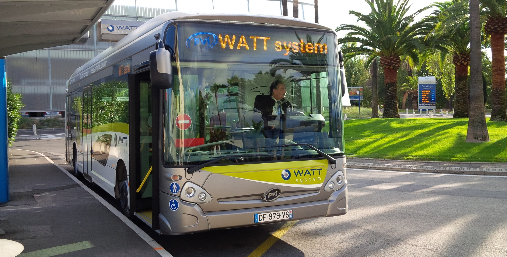

Le Watt Bus
Et si prendre le bus permettait de ne plus rejeter de CO2 dans l’atmosphère ? Depuis peu, c’est possible. Nous avons élaboré un bus totalement électrique, qui ne perd pas son temps à se charger.Le projet a été lancé dans la ville de Nice. Grâce à nous les niçois peuvent désormais prendre le bus tout en protégeant la planète.
Le bus est équipé d’un système appelé Watt System. Il permet de charger le bus en un temps record de 10 secondes. En effet, tous les
 arrêts de bus de la ligne sont équipés de totems permettant de recharger grâce aux supercondensateurs. Une nouvelle technologie élaborée par Transport My
Mind qui permettrait de remplacer tous les moteurs en Watt System.
arrêts de bus de la ligne sont équipés de totems permettant de recharger grâce aux supercondensateurs. Une nouvelle technologie élaborée par Transport My
Mind qui permettrait de remplacer tous les moteurs en Watt System.En ajoutant que les supercondensateurs ont une durée de plus d’un million de recharge. Permettant de ne changer les bornes qu’une fois tous les 5 ans. Un gain de temps, d’argent, tout en étant écologique.